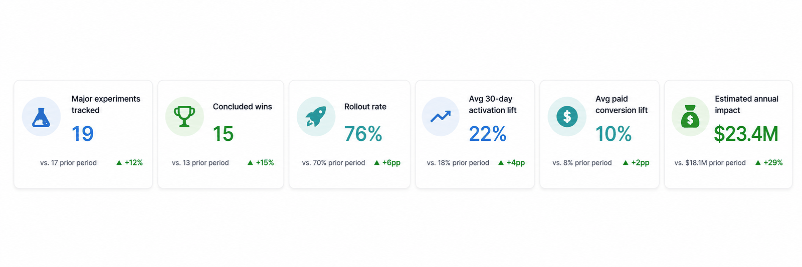
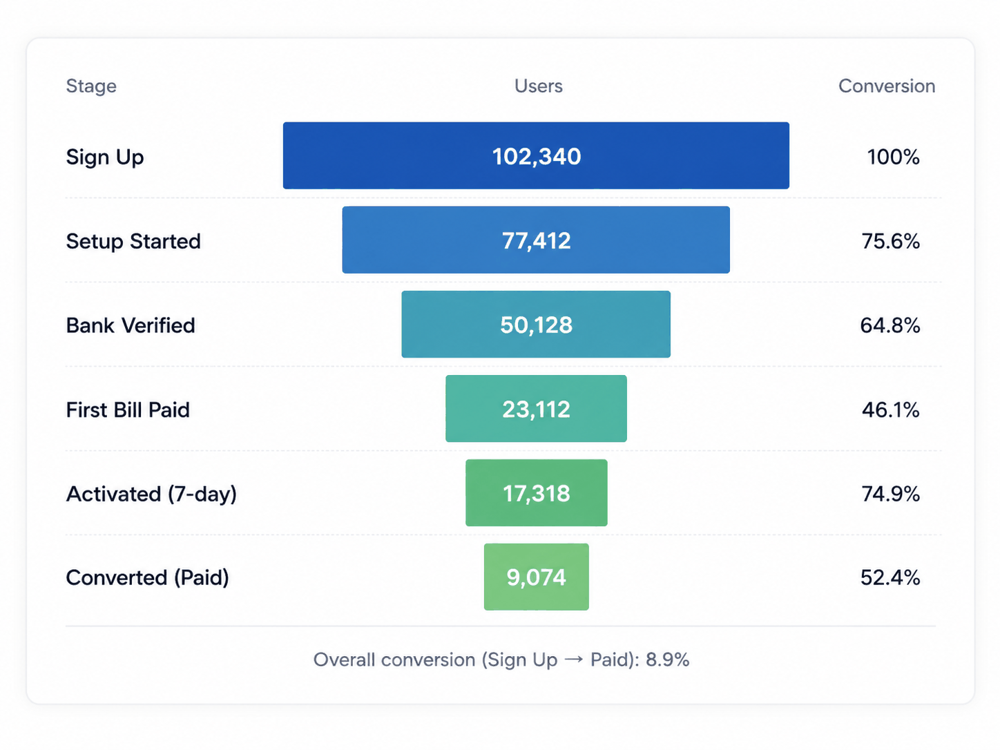
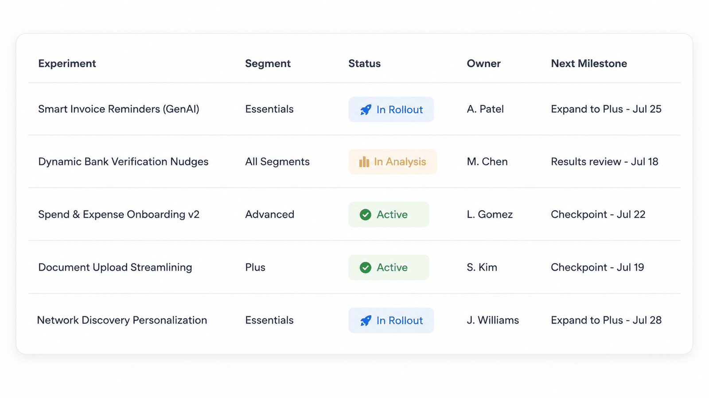
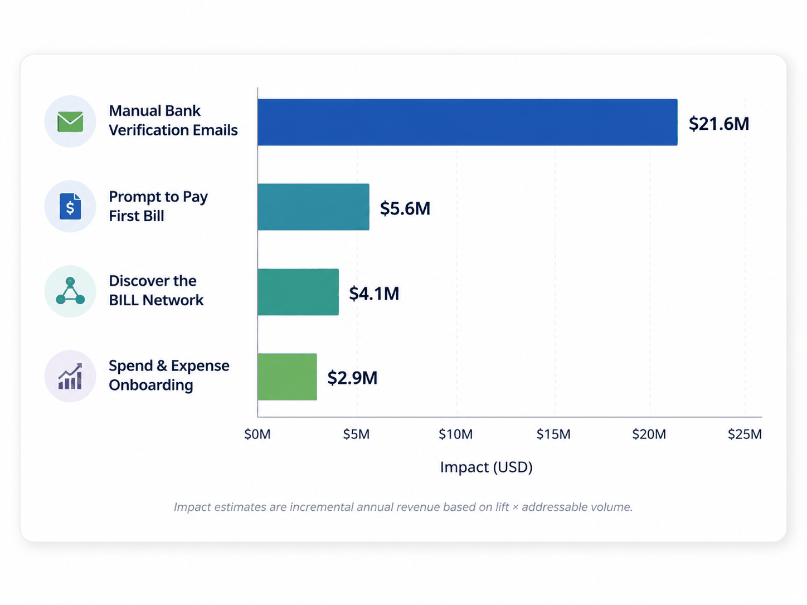
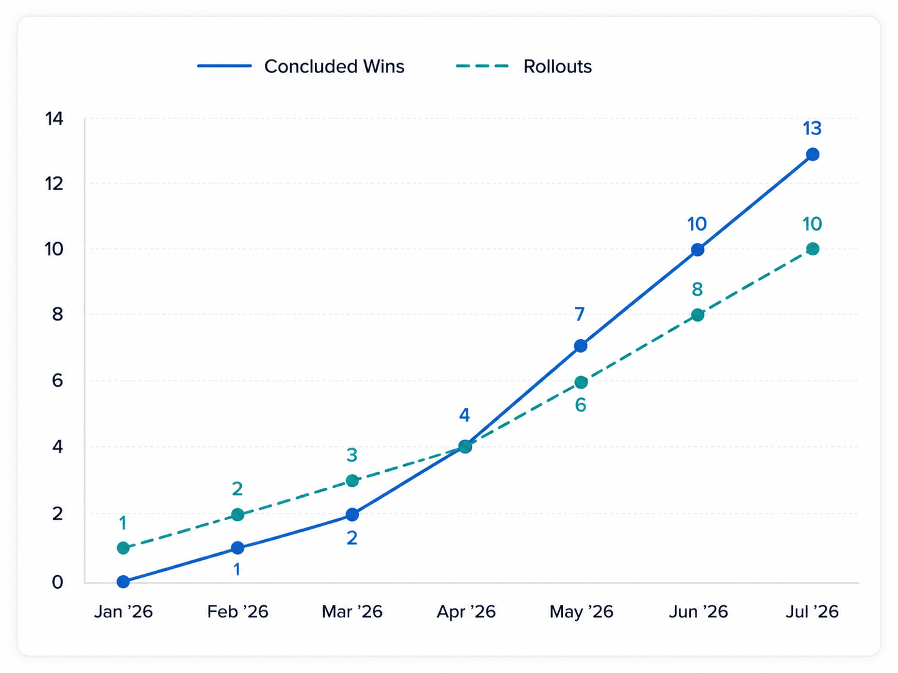
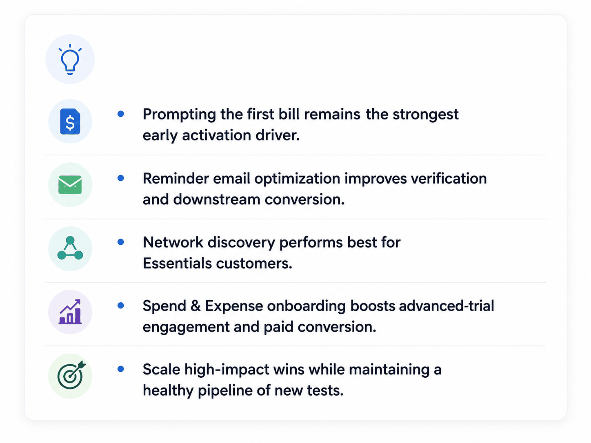

Case study
Test, learn, roll out: the AP/AR onboarding experimentation program
At a B2B payments fintech, I engineered the data pipelines, experimentation models, and Tableau reporting framework behind 18+ A/B tests on the new-customer onboarding funnel — turning “we think this helps activation” into measured, control-versus-treatment answers that shipped.

Context
One funnel, two products, thirty days
The platform automates accounts payable (AP — the bills a business owes its vendors) and accounts receivable (AR — the invoices it is owed). New organizations start in a trial: they connect a bank account, add vendors or customers, and — if onboarding works — pay their first bill or send their first invoice. That first month decides everything: an org that pays a vendor in its first 30 days is dramatically more likely to convert to a paid plan and stay.
Growth owned the funnel; Analytics & DS defined the experimentation practices; my job was the measurement machinery — so that when anyone changed onboarding task ordering, “prompt to pay” nudges, bank-verification messaging, or network discovery, the effect could be read cleanly off a dashboard instead of argued about in a meeting.

Method
A/B testing, briefly
An A/B test is a randomized controlled experiment: eligible organizations are randomly assigned to a control group (current experience) or a treatment group (the change), and the same metric is compared across both. Randomization is what buys causality — both groups face the same seasonality, marketing pushes, and product bugs, so a difference in outcomes can be attributed to the change itself rather than to whoever happened to receive it.
Each experiment here was designed before launch: a written hypothesis, a primary metric, guardrail metrics, segment definitions (ICP — ideal customer profile — versus all orgs), and a pre-committed sample size. For conversion-style metrics, the readout is a two-proportion z-test. With p̂T, p̂C the observed rates and nT, nC the group sizes:
Under the null hypothesis H0: pT = pC, z is approximately standard normal, so |z| ≥ 1.96 means the lift is significant at α = 0.05 — and the reported lift always carries its 95% confidence interval, (p̂T − p̂C) ± 1.96 · SE. Just as important is the sample size committed before launch, from the minimum detectable effect (MDE) — the smallest lift worth acting on:
Worked example at our scale: detecting a 1.0 pp lift on a 5.5% baseline first-bill rate, at 95% confidence and 80% power ((1.96 + 0.84)² ≈ 7.84), needs ≈ 8,800 orgs per arm — two to three weeks of trial volume on the funnel above. That calculator lived next to the experiment registry, and it is why the program ran fixed-horizon tests: no peeking at the p-value every morning and stopping on the first lucky day, no calling winners on underpowered segments.
What I built
The measurement machinery
Experimentation ran on an in-house layer built on LaunchDarkly feature flags: targeting rules split eligible orgs into arms, and every flag evaluation was logged as an exposure event. My work started where the flags ended — getting from raw evaluations to trustworthy readouts.
Assignment & exposure pipelines
Flag evaluations landed in the warehouse as deduplicated, first-exposure-attributed assignment tables — one row per org per experiment, immune to re-evaluation noise and reassignment bugs. Sample-ratio-mismatch checks ran on every refresh.
Behavioral event ingestion
Mixpanel product events and Pendo guide interactions ingested to Redshift on Airflow schedules, with identity stitching from anonymous visitor to admin to organization — so funnels meant the same thing in every tool.
A governed metrics layer
Activation, conversion, verification, and segment definitions (ICP, plan tier) modeled once as warehouse marts — every experiment readout joined the same exposure tables to the same metric tables. No per-experiment SQL forks, no “my activation number differs from yours.”
Templated Tableau readouts
A reporting framework where a new experiment got a full dashboard — arms, lift, confidence intervals, segment cuts, guardrails — by registering metadata, not by building a workbook. Readout setup went from days to hours.
The experiment registry
A running catalog of every major experiment: hypothesis, design, sample-size commitment, owner, status, and concluded result — the institutional memory that let wins compound instead of being re-litigated.

Representative experiments
Four tests that paid for the program
Prompt to pay a first bill CONCLUDED · WON
Roughly one in eighteen new AP orgs paid a vendor in their first 30 days — despite that action being the single strongest predictor of conversion and retention. The hypothesis: after a key setup action (add a vendor, create a bill, add a payment method), explicitly prompt the admin with a “pay your first bill” task.
- +92% 7-day activation and +21% 30-day activation in the ICP segment
- ≈ $5.6M estimated annual impact; rolled into the successor onboarding flow
Manual bank-verification reminder emails CONCLUDED · WON
Manual (micro-deposit) bank verification is where trials stall: verifications expire before anyone confirms the amounts. The test re-timed and rewrote the reminder sequence.
- +6% successful manual bank adds; −23% expired verifications; +9% banks verified
- +5% activation, +8% paid conversion — ≈ $21.6M annual TPV (total payment volume) unlocked
Payments-network discovery CONCLUDED · WON
For entry-tier (Essentials) orgs, onboarding added education and discovery of the platform’s payments network — finding vendors already on the network means the first payment needs no vendor setup at all.
- +12% activation and +17% paid conversion for Essentials orgs
- ≈ $4.1M projected annual incremental LTV (lifetime value); rolled out to 100% of the segment
Spend & expense in advanced onboarding CONCLUDED · WON
Advanced-trial orgs that signaled interest in the company’s spend & expense product (S&E — corporate cards plus expense management) got an enhanced onboarding flow that carried the application forward instead of parking it.
- +55% S&E application starts, +52% submissions
- +15% 30-day activation, +6% paid conversion — ≈ $2.9M estimated annual impact

Operating model
Wins compound when rollout is the default
The program’s rule was that a concluded win goes to 100% unless a guardrail objects — and the measurement stack is what made that safe. Because every experiment read from the same exposure tables and metric marts, a “win” meant the same thing in February as in July, and successive experiments could build on rolled-out predecessors without double-counting their lift.


Honest postscript
What aged out
Flag-based assignment with hand-rolled exposure logging was the right 2022 answer; today I would reach for warehouse-native experimentation (GrowthBook, Eppo) sitting directly on a dbt metrics layer, and add CUPED variance reduction to shrink those two-to-three-week runtimes. The Google-Sheets-linked deep dives that supplemented dashboards are the part I’d retire first — the analyses were sound, but anything that matters belongs in a governed mart, not a linked spreadsheet. Fixed-horizon testing served the program well; a sequential (always-valid) framework is the natural next step for a faster funnel.
Glossary
Terms used above
| Term | Meaning |
|---|---|
| AP | Accounts payable — the bills a business owes its vendors. |
| AR | Accounts receivable — the invoices a business is owed by its customers. |
| Activation | An org completing its first core money movement (e.g., first bill paid) within 7 or 30 days. |
| Conversion | A trial org becoming a paying subscriber. |
| ICP | Ideal customer profile — the segment the product is built and priced for. |
| TPV | Total payment volume — dollars moved through the platform. |
| LTV | Customer lifetime value — projected total margin from a customer relationship. |
| S&E | Spend & expense — the corporate card and expense-management product line. |
| MDE | Minimum detectable effect — the smallest lift an experiment is powered to detect. |
Employer anonymized; internal platform names omitted. All metrics are directionally accurate but deliberately adjusted, and dashboards are reconstructions — no confidential performance data appears on this page.